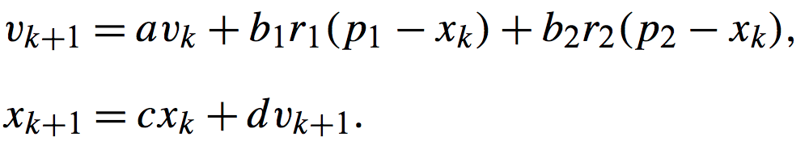

Sometimes we are required to cover line segments with grids. Here, I will introduce a simple trick to build the grids elegantly. The whole precedure can be divied into two steps as is shown below.
Clip a Line Segment with Boundaries of Grid
Below is the code for clipping a line segment with grids. The idea is pretty straigtfoward. A line can be described by the formula in Fig. 1 parameterized by t. So We can represent a cuting point by t when we cut a line segment with the boundary of grids. The procedure in code consists of three steps. Firstly, we cut a line with the boundaries of grids parallel to x axis and insert the t to a set. And similarly, we cut a line with the boundaries of grids parallel to y axis and also insert the t to a set. Finally, we compute the coordinates of the clipping points according to Fig.1 and put them to a vector.
set<double> t; t.insert(0);t.insert(1);//insert start point and end point of a line segment
for(int i = min(x1, x2)/GRID_LENGTH); i < max(x1, x2)/GRID_LENGTH; i++){//clip a line segment with boundary of grids if(!(x1=<i*GRID_LENGTH&&i*GRID_LENGTH<x2))continue; t.insert((i*GRID_LENGTH)/(x2-x1)); }
for(int j = min(y1, y2)/GRID_LENGTH); j < max(y1, y2)/GRID_LENGTH; j++){//clip a line segment with boundary of grids if(!(y1=<j*GRID_LENGTH&&i*GRID_LENGTH<y2))continue; t.insert((j*GRID_LENGTH)/(y2-y1)); }
set<double>::iterator it; double last_it; vector<pair<double,double> > segment_points; for(it = t.begin(); it != t.end(); it++){//insert clipping points to a vector if(it!=t.begin()&&abs(*it-last_it)<eps)continue; last_it = *it; segment_points.push_back(make_pair(x1+*it*(x2-x1), y1+*it*(y2-y1))); }
Put Line Segment to Its Corresponding Grid
After line segment clipping, the endpoints of a line is guaranteed to be lied in the grid. Without loss of generality, we represent a grid with its lower left corner coordinate. Therefore, we could quickly determine which grid the current line is located at by its midpoint.
Particle Swarm Optimization(PSO) is a computational method that finds a solution by iteratively improving a candidate solution, Which is broadly applied to the problems whose exact solution are impossible to compute, specifically nonlinear optimization problems.
PSO is firstly introduced to simulate social behavior but finally became a optimization paradigm to perform optimzation in complex situations. PSO have the following advantages: 1) it makes few assumptions and is capable of searching solutions in a very large state space. 2) it does not require the problem to be differentiable like ohter optimization paradigm such as gradient descent. However, it does not guarantee that a opitmal solution is found.
Standard Swarm Optimization Procedure
Simulating the food seeking process of flock, PSO fisrtly initialize many particles representing solutions and update those particles iteratively according to the PSO updating rule shown in Fig.1. p1 indicates the best solution in histroy for each particle while p2 indicates best solution of all particles. Therefore, updating is divided into two stages, the velocity reflecting the inertia towards better solution is computed and then this velocity is added to the previous position of each particle in second stage. a, b, c, d, r1, and r2 are all coefficients affecting this updating process. 
Finding a solution satisfying multiple constraints
However, for each particle a variety of constraints need to be satisfied in practice, leading to an optimization problem under certain conditions. Below is an example code I wrote to optimize a nonliear function with complex constrains. In this example code, the action I took is ignoring those illegal solutions after updating. At the same time, I record number of times that illegal solutions happend as an reference for parameter tuning.
fori =1:problem.nparticles while(1) particles(i).state = generateParticle(problem.forest.limitation, problem.forest.structure, problem.statesize, problem.forest.diameterlimitation); if (checknull(particles(i).state) ==0) || (diametercheck(particles(i).state, problem.forest.structure,problem.forest.diameterlimitation) == 0)... ||(checkheight(particles(i).state, problem.forest.structure,problem.forest.limitation) ==0)||(anglecheck(particles(i).state, problem.forest.structure) == 0) continue; end break; end particles(i).velocity = zeros(problem.statesize); particles(i).volume = calcVolume(particles(i).state, problem.forest.structure); particles(i).pbest.state = particles(i).state; particles(i).pbest.volume = particles(i).volume; if particles(i).volume < gbest.volume gbest.volume = particles(i).volume; gbest.state = particles(i).state; end end for it = 1:problem.niterations problem.L = 2*(1-it*1.0/problem.niterations); if it< 0.75*problem.niterations problem.avoidancerate = rand(1); else problem.avoidancerate = 1.0; end for p = 1:problem.nparticles*problem.avoidancerate particles(p).velocity = problem.w*particles(p).velocity ... + problem.c1*rand(problem.statesize).*(particles(p).pbest.state - particles(p).state) ... + problem.c2*rand(problem.statesize).*(gbest.state - particles(p).state); particles(p).state = particles(p).state + particles(p).velocity.*problem.statenormalize*0.15; if (diametercheck(particles(p).state, problem.forest.structure,problem.forest.diameterlimitation) == 0)... ||(checkheight(particles(p).state, problem.forest.structure,problem.forest.limitation) ==0)||(anglecheck(particles(p).state, problem.forest.structure) == 0) % particles(p).state = particles(p).pbest.state; problem.fail(it) = problem.fail(it) + 1; continue; end particles(p).volume = calcVolume(particles(p).state, problem.forest.structure); if particles(p).volume < particles(p).pbest.volume particles(p).pbest.volume = particles(p).volume; particles(p).pbest.state = particles(p).state; if particles(p).pbest.volume < gbest.volume gbest.volume = particles(p).pbest.volume; gbest.state = particles(p).pbest.state; end end end for p = ceil(problem.nparticles*problem.avoidancerate):problem.nparticles particles(p).velocity = problem.w*particles(p).velocity ... - problem.L*(rand(problem.statesize).*(particles(p).pbest.state - particles(p).state) ... + rand(problem.statesize).*(gbest.state - particles(p).state)); particles(p).state = particles(p).state + particles(p).velocity.*problem.statenormalize*0.15; if (diametercheck(particles(p).state, problem.forest.structure,problem.forest.diameterlimitation) == 0)... ||(checkheight(particles(p).state, problem.forest.structure,problem.forest.limitation) ==0)||(anglecheck(particles(p).state, problem.forest.structure) == 0) problem.fail(it) = problem.fail(it) + 1; continue; end particles(p).volume = calcVolume(particles(p).state, problem.forest.structure); if particles(p).volume < particles(p).pbest.volume particles(p).pbest.volume = particles(p).volume; particles(p).pbest.state = particles(p).state; if particles(p).pbest.volume < gbest.volume gbest.volume = particles(p).pbest.volume; gbest.state = particles(p).pbest.state; end end end problem.w = problem.w*problem.wdamp; problem.minivolume(it) = gbest.volume; problem.stateiterations(it).state = zeros(problem.statesize); problem.stateiterations(it).state = gbest.state; end save('problem') savefig('VolumeChange'); savedata(problem.stateiterations, problem.forest.structure); save ('problem.minivolume.mat'); showvolumes(problem.minivolume); % profile viewer
Local Minimum Avoidance
As an heuristic strategy, PSO also tends to falls into local minimum. Here we provide a simple trick to handle this problem. Particles are divided to two groups according to a random generated number, avoidance rate, in each iteration. One group executes the traditional updating rule to move toward the discovered better solution while another group explores potential area that may be missed through moving away from the discovered solution. In this manner, particles are capable of exploring larger space instead of trapping into local minimum and hence PSO performs slightly better.
Reference
Particle Swarm Optimization. (2017, November 15). In Wikipedia, the free encyclopedia. Retrieved November 15, 2017, from http://en.wikipedia.org/wiki/Particle_swarm_optimization Trelea, I. C. (2003). The particle swarm optimization algorithm: convergence analysis and parameter selection. Elsevier North-Holland, Inc.
This is my first time to participate in data competition. Unfortunately, I obtained quite a low score in this competition. The problem and my solution is posted here.
In this problem, we are required to identify in which shop the transaction happened given the relevant information.
My Solution
I took this problem as a binary classification problem. Therefore, I trained a xgboost classifier for every shop. Then I used the trained classifiers to compute logistic probability of the corresponding shop and selected the shop which has maximum probability as our prediction result.
Below is my python code for feature selection written on jupyter notebook.
import pandas as pd import numpy as np import matplotlib.pyplot as plt from collections import Counter from IPython.display import Image from sklearn.cross_validation import train_test_split from sklearn.metrics import log_loss, accuracy_score from sklearn.ensemble import AdaBoostClassifier from sklearn.ensemble import GradientBoostingClassifier from datetime import datetime %matplotlib inline
##reading the data shop_info = pd.read_csv('ccf_first_round_shop_info.csv') train_data = pd.read_csv('ccf_first_round_user_shop_behavior.csv')
##convert the string to int for later use if shop_info["shop_id"].dtype == 'object': shop_info["shop_id"] = shop_info.shop_id.str.replace('s_', '').astype(np.int64) if shop_info["category_id"].dtype == 'object': shop_info["category_id"] = shop_info.category_id.str.replace('c_', '').astype(np.int64) if shop_info["mall_id"].dtype == 'object': shop_info["mall_id"] = shop_info.mall_id.str.replace('m_', '').astype(np.int64)
##Add mall information to training data if train_data["shop_id"].dtype == 'object': train_data["shop_id"] = train_data.shop_id.str.replace('s_', '').astype(np.int64) if train_data["user_id"].dtype == 'object': train_data["user_id"] = train_data.user_id.str.replace('u_', '').astype(np.int64)
##convert transaction time to a number as feature train_data.time_stamp = train_data.time_stamp.astype(str) time = [] for index,row in train_data.iterrows(): tmp = row['time_stamp'] a = int(tmp[11]); b = int(tmp[12]); c = int(tmp[14]); d = int(tmp[15]) time.append(((a*10+b)*60+(c*10+d))/10) train_data['time'] = pd.Series(time, index = train_data.index) if'time_stamp'in train_data: train_data = train_data.drop('time_stamp',1) cols = train_data.columns.tolist() col = [] col.append(cols[0]);col.append(cols[2]);col.append(cols[3]);col.append(cols[4]);col.append(cols[5]);col.append(cols[1]); train_data.append(col) train_data = train_data[col]
##sort wifi_infos based on their strength and build a dictionary to map string to int for later use b = [] for index,row in train_data.iterrows(): a = row["wifi_infos"].split(';'); a = sorted(a, key = lambda d:int(d.split('|')[1]),reverse = True) b.append(a) wifi_infos = np.zeros((len(b),20)); for i, row in enumerate(b): for j, column in enumerate(row): wifi_infos[i][j] = train_bissid2dict[column.split('|')[0]]
##map shop_id, mall_id and user_id to class and build a dictionary data_without_wifi = train_data.values shop_id2class = {} class2shop_id = {} cnt_shop = 1; user_id2class = {} cnt_user_id = 1; mall_id2class = {} cnt_mall_id = 1; for i in range(len(data_without_wifi)): ifnot data_without_wifi[i][5] in shop_id2class: shop_id2class[data_without_wifi[i][5]] = cnt_shop class2shop_id[cnt_shop] = data_without_wifi[i][5] cnt_shop += 1 data_without_wifi[i][5] = shop_id2class[data_without_wifi[i][5]] ifnot data_without_wifi[i][3] in mall_id2class: mall_id2class[data_without_wifi[i][3]] = cnt_mall_id cnt_mall_id += 1 data_without_wifi[i][3] = mall_id2class[data_without_wifi[i][3]] ifnot data_without_wifi[i][0] in user_id2class: user_id2class[data_without_wifi[i][0]] = cnt_user_id cnt_user_id += 1 data_without_wifi[i][0] = user_id2class[data_without_wifi[i][0]]
##Add the wifi information and save the data data = np.hstack((data_without_wifi[:,:5],wifi_infos,data_without_wifi[:,5].reshape(-1,1))) data[data==0]=np.nan np.savetxt('data.csv',data, delimiter=",")
To Sum up, the feature I selected includes longitude, latitude, mall id, transation time and wifi infos sorted from highest to lowest based on their strength.
import numpy as np import matplotlib.pyplot as plt from sklearn.model_selection import train_test_split from numpy import genfromtxt import xgboost as xgb
data = genfromtxt('data.csv',delimiter=',') for shop_id in range(1,8478): data_x = data[:,:-1]; #data_y = data[:data_scale*20000,-1].astype(int) data_y = (data[:,-1]==shop_id).astype(int); X_train, X_test, y_train, y_test = train_test_split(data_x, data_y, test_size=0.33, random_state=42)
eval_data = pd.read_csv('evaluation_public.csv') if eval_data["user_id"].dtype == 'object': eval_data["user_id"] = eval_data.user_id.str.replace('u_', '').astype(np.int64) if eval_data["mall_id"].dtype == 'object': eval_data["mall_id"] = eval_data.mall_id.str.replace('m_', '').astype(np.int64)
b = [] for index,row in eval_data.iterrows(): a = row["wifi_infos"].split(';'); a = sorted(a, key = lambda d:int(d.split('|')[1]),reverse = True) b.append(a)
wifi_infos = np.zeros((len(b),20)); for i, row in enumerate(b): for j, column in enumerate(row): if column.split('|')[0] in train_bissid2dict: wifi_infos[i][j] = train_bissid2dict[column.split('|')[0]] else: wifi_infos[i][j] = 0
if'time_stamp'in eval_data: time = [] for index,row in eval_data.iterrows(): tmp = row['time_stamp'] a = int(tmp[11]); b = int(tmp[12]); c = int(tmp[14]); d = int(tmp[15]) time.append(((a*10+b)*60+(c*10+d))/10) eval_data['time'] = pd.Series(time, index = eval_data.index) if'time_stamp'in eval_data: eval_data = eval_data.drop('time_stamp',1) if'wifi_infos'in eval_data: eval_data = eval_data.drop('wifi_infos',1)
data_final = eval_data.values for i in range(len(data_final)): data_final[i][2] = mall_id2class[data_final[i][2]] if data_final[i][1] in user_id2class: data_final[i][1] = user_id2class[data_final[i][1]] else: data_final[i][1] = 0
Prediction is described below. It is really funny that I run this code on PI supercomputer for more than 40 hours. After I have been waiting for 20 hours, I tell myself that always program in future in parallel manner. At this time, I realize how important the distributive machine learning is.
import numpy as np import matplotlib.pyplot as plt from sklearn.model_selection import train_test_split from numpy import genfromtxt import xgboost as xgb
data = genfromtxt('final_data.csv',delimiter=',') res = np.zeros((len(data),2)) res[:,0] = data[:,0]
bst = {} for i in range(1,8478): bst[i] = xgb.Booster(); bst[i].load_model(str(i)+'.model'); for i in range(len(data)): evaluation = xgb.DMatrix(data[i,1:]); pred = np.zeros((8478,1)); for j in range(1,8478): pred[j] = bst[j].predict(evaluation); hash_shop_id = np.argmax(pred); res[i,1] = hash_shop_id;
np.savetxt('res.csv', res, delimiter=",")
Arrange the prediction results to the required results in jupyter notebook
1 2 3 4 5 6 7 8 9 10 11 12 13
from numpy import genfromtxt res_data = genfromtxt('res.csv',delimiter=',') res_data = np.array(res_data).astype(int) for i in range(len(res_data)): res_data[i,1] = class2shop_id[res_data[i,1]] np.savetxt('result.csv',res_data,fmt='%d',delimiter=',')
replacements = {',':',s_'} with open('result.csv') as infile, open('result1.csv', 'w') as outfile: for line in infile: for src, target in replacements.items(): line = line.replace(src, target) outfile.write(line)
Some Mistakes I Have Made
Bias is significant in training because the number of negative data items is larger than postive greatly.
I only sorted the wifi_info as the feature without normalizing their strength as another feature, leading to loss of information.
I forget to use cross-validation to tune my hyperparamters.
Introduction of Selective Laser Sintering in 3D printing
3D printing is an efficient additive manufacturing technology. The digital 3-dimensional model is sliced to many layers with equal height between adjacent layers and it is fabricated layer by layer. As one main technology of 3D printing, Selective Laser Sintering(SLS) fuses powdered materials with high powered laser focused on the surface of model. Unfortunately, the model will be damaged by high power if walls are too thin to tolerate the heat generated as shown in Fig.1. Therefore, the model needs to be modified slightly to avoid being burned out during fabrication.
Problem Statement
The problem can be formulated to thicken all the thin walls to the required width such as 0.8 millimeters. As is shown in Fig.1, there are two kinds of contours in one layer, including outer contours and inner contours. Usually, outer contours are expected to be maintained to its orginal shape since change of outer contours will result in appearance change of the fabricated model. Therefore, our aim can be stated as shrinking the inner loop to ensure that walls meet the requirements.
Methodology
Here we propose an efficient and elegant strategy to enlarge the areas in danger. There are two main steps in our strategy, offseting and clipping. Firstly, we offset the outer boundary toward the inner region by 0.8 millimeters and clip all the inner contours intersecting with it. And then we offset the inner contours by 0.8 millimeters iteratively toward the inner region and clip all the inner contours intersecting with it. Finally, walls in this layer are guaranteed to be thinner then the required width after this two operations.
Code
Below is the code written in C++ using the Clipper Library which supplies us an easy way to execute bool operations between polygons in a 2 Dimensional plane.
Here we provide an efficient strategy to modify the model. However, this is surely not the optimal solution if we examine this strategy closely. For instance, both of two contours are ‘eaten’ by another contour in our strategy, which caused more material are used. Actually, we can draw a conclusion that there must be some way to offset both the contours less to meet the requirement. Therefore, a better solution to minimize the material addition is expected to explore in the future.
Welcome to Hexo! This is your very first post. Check documentation for more info. If you get any problems when using Hexo, you can find the answer in troubleshooting or you can ask me on GitHub.